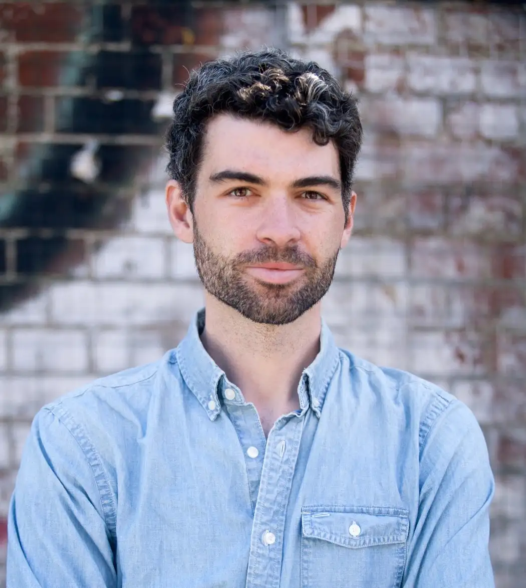

Team
Project Leader & Instructor
Dr. Lennart Wittkuhn
Lennart is a Postdoctoral Researcher and Lab Manager in the Research Group “Mechanisms of Learning and Change” at the University of Hamburg and the Max Planck Research Group NeuroCode at the Max Planck Institute for Human Development in Berlin. In his scientific work, Lennart investigates neural replay of task representations in the human brain using functional magnetic resonance imaging (fMRI). He is also passionate about open science, research data management, reproducibility and tools that improve the scientific workflow.
| | | | | | | | |
Scientific Advisor
Prof. Dr. Nicolas Schuck
Nico is a professor of Psychology and principal investigator of the Research Group “Mechanisms of Learning and Change” at the University of Hamburg and the Max Planck Research Group NeuroCode at the Max Planck Institute for Human Development in Berlin.
| | | | | | | | |

Student Research & Teaching Assistant
Konrad Pagenstedt
Konrad is a Bachelor Student of Psychology at the University of Hamburg. Konrad is enthusiastic about exploring various areas within the field of psychology, open science, research data management and reproducibility. He supports the project as a student research and teaching assistant.
| | | |
Student Research Assistant
You?
We are looking for a student research assistant (SHK/WHK)!
- Tasks: Supporting the teaching project (preparation of teaching materials, evaluation, project reporting, etc.)
- Duration: as soon as possible to 31.03.2024
- Hours: up to 38 hours per month (flexible working hours)
- Salary: SHK: 12.00 € / hour | WHK: 13.95 € / hour
Details can be found on the project website and in this PDF!